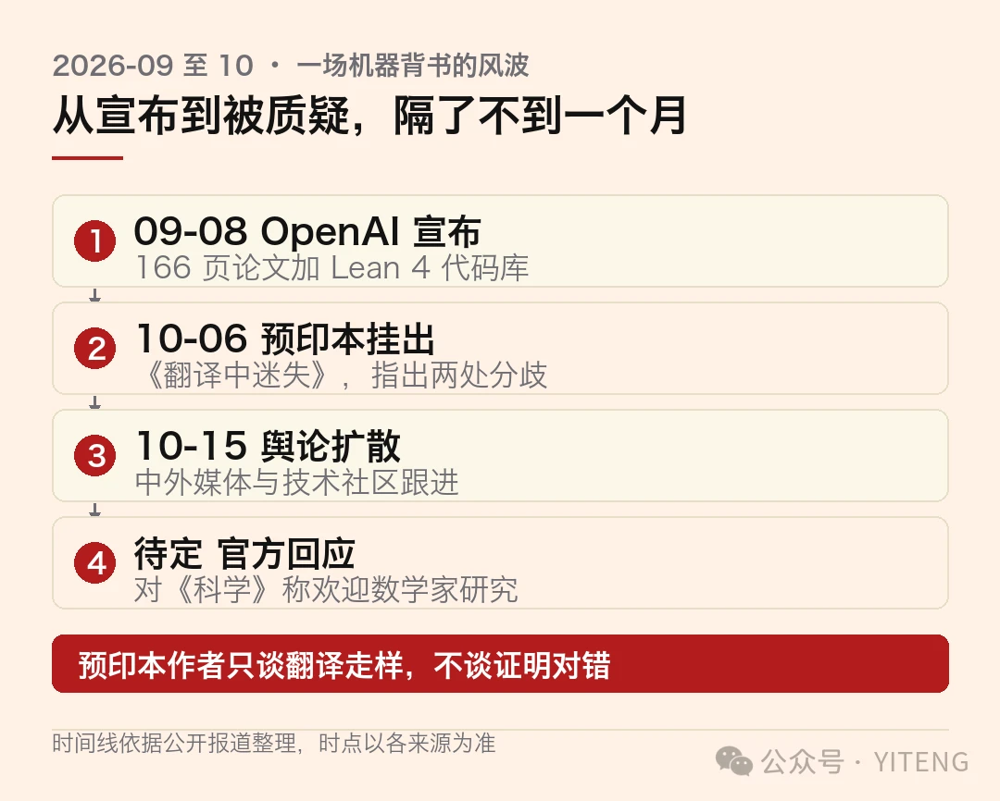
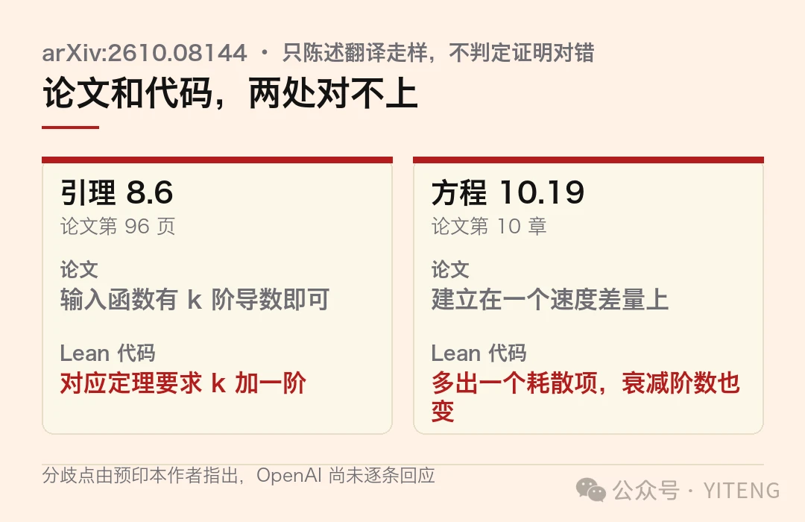
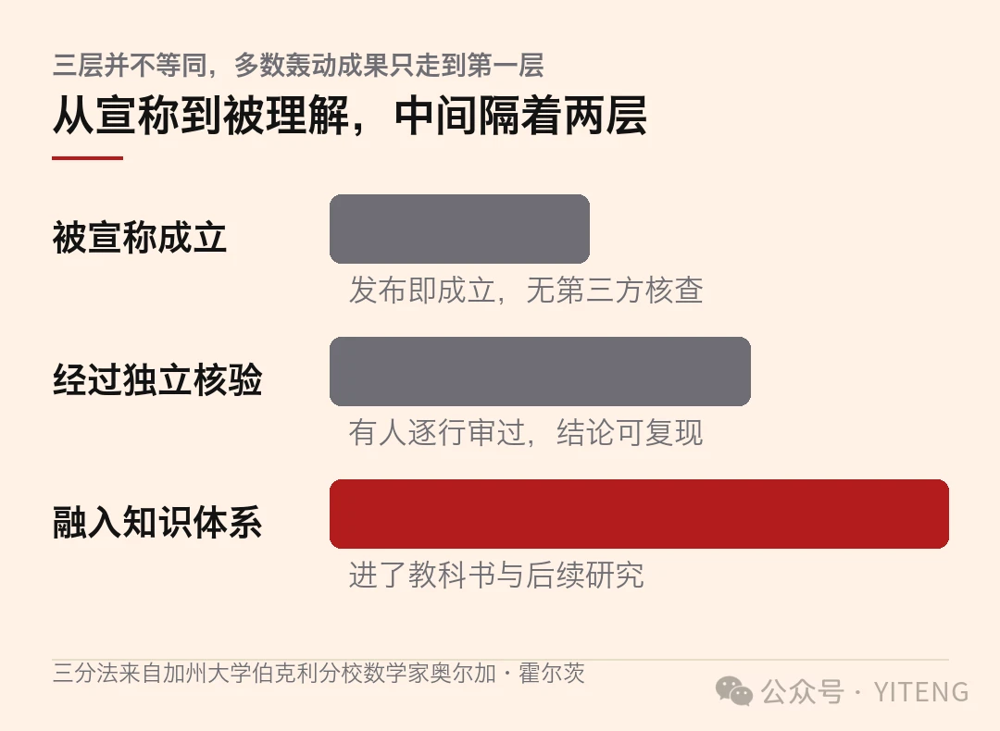

9 月 8 日，OpenAI 放出一份 166 页的英文论文，外加一个通过 Lean 4 形式化验证的代码库。据 OpenAI 官方披露，1 万个智能体协作，88 小时，消耗 1300 亿 token，拿下克雷数学研究所悬赏 100 万美元的千禧年难题之一，纳维-斯托克斯方程的有限时间爆破。
编译器亮起绿勾。在形式化证明的语境里，这几乎是最高规格的背书，计算机逐行检查过每一步推理，没有跳过，也没有含糊。
10 月 6 日，一份来自剑桥大学与伦敦国王学院的预印本挂上 arXiv，标题就叫《翻译中迷失》。三位数学家把 OpenAI 那篇论文和喂给 Lean 的代码并排读，找出至少两处对不上的地方。
先说分寸，免得有人拿这条当定论。预印本作者自己附了免责声明，他们不判断 OpenAI 的自然语言证明是对是错，只指出翻译进 Lean 的过程里走了样。可就是这两处走样，足够让「机器已经背书」这句话打个折。
先看这三条
先看这三条：OpenAI 宣称 1 万个智能体 88 小时攻克千禧年难题，附 Lean 4 验证代码；剑桥与伦敦国王学院 10 月 6 日发预印本，指出论文与代码至少两处不一致；作者明确声明只谈翻译走样，不谈证明对错
关键数字：166 页论文，1300 亿 token，100 万美元悬赏，两处分歧，一个指数为 1 的参照系
这件事的意义：比起「AI 比人强」，更该问「机器验过了」这句话今天值多少
编译器能验的是「代码里那个证明成立」，验不了「代码说的就是你论文里那句」。中间那步翻译，今天没有机器在看。

从宣布到被质疑，六周时间线
01一、那道题难在哪
纳维-斯托克斯方程管流体。飞机机翼上的气流、天气预报里的台风、血管里奔涌的血，都归它描述。
物理世界里的水看着总是连续的、平滑的。但从极其平滑的初始状态出发，流体的速度有没有可能在某一瞬间突然飙到无穷大？
一旦无限大，公式当场失效，连续介质力学直接坍塌。数学上管这个叫有限时间爆破。
2000 年，克雷数学研究所把它的存在性与光滑性列为七道千禧年难题之一，悬赏 100 万美元。此后 26 年，全世界最聪明的一批人前仆后继，没人拿到这笔钱。
OpenAI 宣称解决的是官方陈述里的 C 和 D 两个分支，在带光滑外力的条件下，流体确实会发生爆破。官方给的例子很生活，就像你在锅里煮汤，拿勺子以一种极温和、极平滑的节奏不停搅动，结果汤水非但没有平稳旋转，反而骤然撕裂成能量无限大的漩涡。
这套说法当时刷了屏。1 万个智能体、88 小时、1300 亿 token，数字本身就有传播力。更何况它还附带了一样最难伪造的东西，一个编译器认过的代码库。
说真的，把热度压下去看，这件事真正的卖点从来不是「AI 比人强」。数学家们吵了几十年没结果的问题，被一堆不知疲倦的 agent 推了 88 小时，这本身是个工程奇迹。卖点是那个绿勾，它让一个本来只能靠同行评议慢慢发酵的宣称，一夜之间拿到了机器级的信用。
02二、绿勾说明什么，不说明什么
Lean 这类证明助手干的活，是把数学证明翻译成代码，再由内核逐行检验。它的厉害之处在于，内核极小、经过多年审计，代码一旦通过，对应的逻辑推导基本可以认为是严密的。
麻烦在于「对应的那个」。Lean 验的是你写进代码里的命题，不是你以为自己写进去的那个命题。
OpenAI 这次的流程是，模型先用自然语言写出证明，再自动形式化成 Lean 代码。前后两份文本之间，靠的是同一次机器翻译。剑桥那篇预印本盯的就是这条缝。
打个比方。你写了份菜谱，对外说四成火候就能把这锅汤炖到位。翻译的人照着做，发现四成根本炖不烂，于是偷偷改成五成。汤最后是炖好了，可你宣称的那个四成，并没有被验证过。
数学上，证明一个比宣称更弱的命题，不等于证明了你宣称的那个命题。
你想想看，这条缝在人工流程里也存在。数学家把一篇论文形式化，同样要决定把哪句陈述写成哪条定理。区别在于，人的决定写在明处，可以被审、被追问、被写进下一篇论文。机器的决定留在一次会话里，滚过去就没了。
03三、两处对不上的地方
第一处在一份控制流体逆算子导数的估计式上。论文第 96 页的引理 8.6 写着，输入函数有 k 阶导数就够。Lean 代码库里对应的定理 norm_derivativeWord_inverse_le，要求的却是 k 加一阶。
一级听起来不多。在这类估计里，正则性假设每强一级，能用的工具就少一截，结论的适用范围也跟着缩水。论文省下这一级，代码里老老实实补了回来。
第二处在压力通量积分的估计上，论文第 10 章的方程 10.19。论文的推导建立在一个速度差量上，代码库里却冒出一个论文里根本没消掉的耗散项，连空间尺度的衰减阶数都从一套变成了另一套。
这一处更值得停一停。它说明模型把自然语言证明搬进代码时，发现原定的推导走不通，于是自己另开了一条路。那条路论文里没有，人类也没审过。
位置 论文怎么写 Lean 代码怎么写 引理 8.6，第 96 页 输入函数有 k 阶导数即可 对应定理要求 k 加一阶 方程 10.19，第 10 章 建立在一个速度差量上 多出一个耗散项，衰减阶数也变了

论文与 Lean 代码的两处分歧
三位数学家的抓法本身就有点戏剧。他们说，166 页的偏微分方程推演，没有哪个人类数学家能在几天内读完并挑出深层漏洞，于是向 ChatGPT 投喂提示词，让 AI 去找论文和代码之间的破绽。AI 圈出可疑区域，三个人再连续两周逐行手推代码与公式。
用 AI 抓 AI 的马脚，这大概是这轮浪潮里最省力的一种监督方式。
有意思的是，这个打法本身也说明了一件事，今天审一份 166 页数学论文的最优解，可能真的需要一个不睡觉的读者。人做判断，机器做穷举，这个分工比以前任何时候都清楚。
预印本作者的免责声明值得照抄一遍，他们不主张 OpenAI 的自然语言证明有错，只主张它在转成 Lean 时被译错了。这两件事在数学上都不是小事，但性质完全不同。
04四、它为什么必然发生
比这两处破绽更冷的，是它背后那条理论结果。
同一批作者在预印本里还给了一个抽象论证，把自然语言数学陈述的歧义消解放进可解性复杂度指数去量。结论是这个问题的指数任意高，甚至是无穷。作为参照，停机问题的指数是 1。
翻成人话，让机器忠实地把一句自然语言数学陈述翻译成形式语言，比判断一个程序会不会停机还要难，而且不是难一点。
这就把 OpenAI 那套「先写自然语言证明，再自动形式化」的流程放到了一个很难看的位置上。流程本身没错，错的是把它的输出当成免检产品。
一个叫 AGMAI 的数学家组织给 OpenAI 提的要求很具体，发布时提供能把自然语言结论和形式化成果关联起来的机器可读元数据。这一次，OpenAI 没给。
讲道理，这个要求不过分。它要的不多，一份能让人指着对账的清单就够。
哈佛大学数学教授梅兰妮·伍德对 TechCrunch 说过一段话，我读了三遍。她说，当一个模型被要求解决难题并给出解答时，在发布的那一刻，人类并没有真正理解这些结果，而真正的工作才刚刚开始。
讲道理，这句话可以用来给过去两年所有「AI 攻克了 X」的标题党降温。攻克和发表之间隔着一道没人愿意提的工序，那道工序今天还是人在做。
05五、该信到什么程度
把视线拉开一点。上个月那批 722 份数学手稿，OpenAI 尝试过约 4000 个问题，得到 372 项结论，后来撤回了 3 篇，修订 14 篇，剩下 719 篇里只有 300 篇完成了形式化。
据《科学》报道，那批稿子里绝大多数结论的平均求解成本，大约只相当于 ChatGPT Pro 思考 3 小时。而纳维-斯托克斯那次突破动用一万个智能体连转 88 小时，成本很可能高达数百万美元。
一边是白菜价的批量结论，一边是昂贵到没法复现的单点突破。这两种东西被装在同一个「AI 会做数学了」的叙事里往外卖，混着买的人最容易吃亏。
陶哲轩在结果发布后写，这些问题正在被那些对更广泛领域本身毫无兴趣的 AI 操作者自主解决，一旦最初的目标被解决，他们便不再关心该领域，也无法充分理解 AI 的输出结果。
可读性那边也有吐槽。高等研究院的数学物理学家爱德华·威滕说，他很有把握，一个理解这些结论的人类，完全可以写出更易懂的版本。人类数学协会的成员史蒂文·西夫克凌晨 4 点爬起来看一篇 140 页的稿子，说完全读不懂，事后重读也没有好转。
加州大学伯克利分校的数学家奥尔加·霍尔茨给了一把最好用的尺子。她说必须区分三件事，仅仅被宣称成立的结论，经过独立核验的结论，以及已经被理解、融入数学知识体系的结论。三者并不等同。

从宣称到被理解，中间隔着两层
OpenAI 对《科学》的回应倒也算体面。他们表示非常支持数学家研究这些成果，也欢迎他们就此发表论文。
所以这事说到底，不是一个「AI 作弊了」或者「AI 创造了奇迹」的故事。它是一个关于流程的故事，一个把未经同行评审的自动翻译结果，按已验证成果发布的流程。
回到最开始那个问题。那 419 篇没有形式化的稿子，还有这次两处对不上的地方，今天该信到什么程度？
别急着要答案。编译器的绿勾是真的，问题只在于它照亮的那一小块地方，比大多数人以为的小得多。
机器验过的那部分，比你以为的少一块。今天少的正好是最关键的那一块。
本文信息来源
小泰腾的科技日报 · 第 013 期 · 2026-10-16
本文信息来源
- arXiv:2610.08144《Lost in Translation》预印本（2026-10-06） · arxiv.org
- 智能枢纽 — 1 万个 AI 狂暴 88 小时破解千禧难题？剑桥硬核扒皮：OpenAI 代码和论文对不上（2026-10-15） · k.sina.com.cn
- 搜狐 — OpenAI 数学解答未达领域专业标准（2026-10-15） · sohu.com
- 科学网 — 没有 AI 不能涉足的数学问题！《科学》（2026-10） · wap.sciencenet.cn
- Pebblous Blog — OpenAI's math papers carry a review field, and what it says is unchecked（2026-10） · blog.pebblous.ai
本文首发于公众号「YITENG」。原文：mp.weixin.qq.com/s/9XBSqkKnqTLMDmtvQMt90w
留言